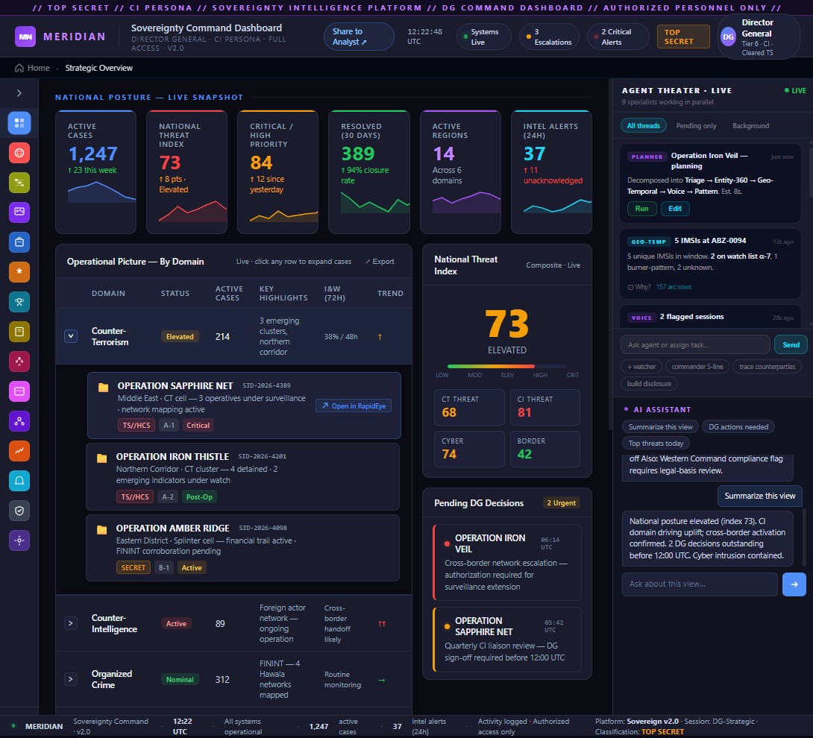
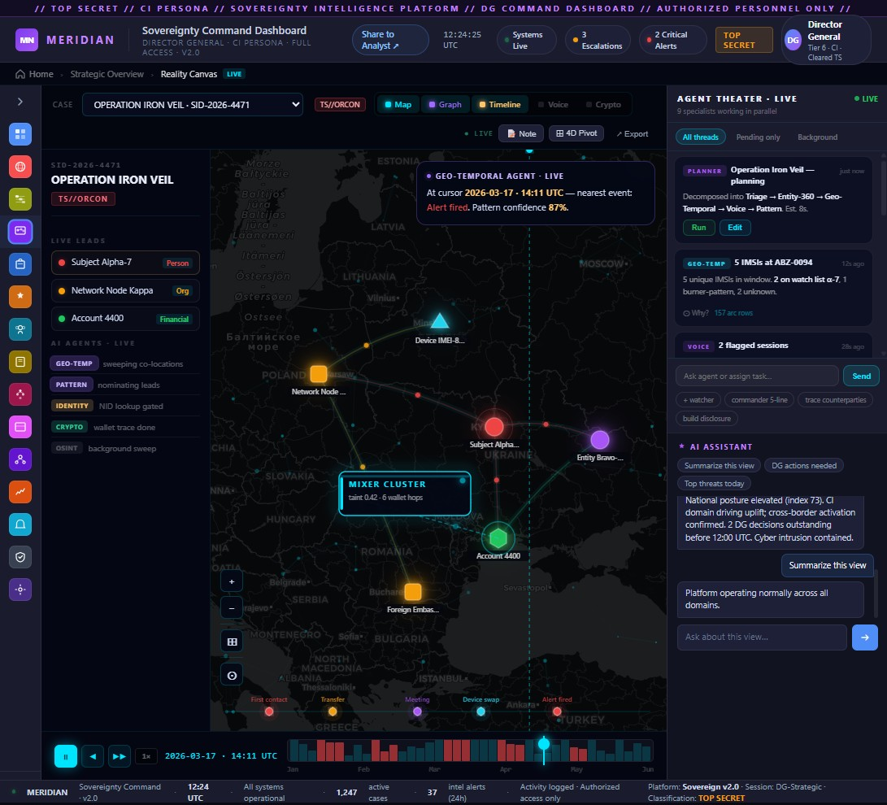
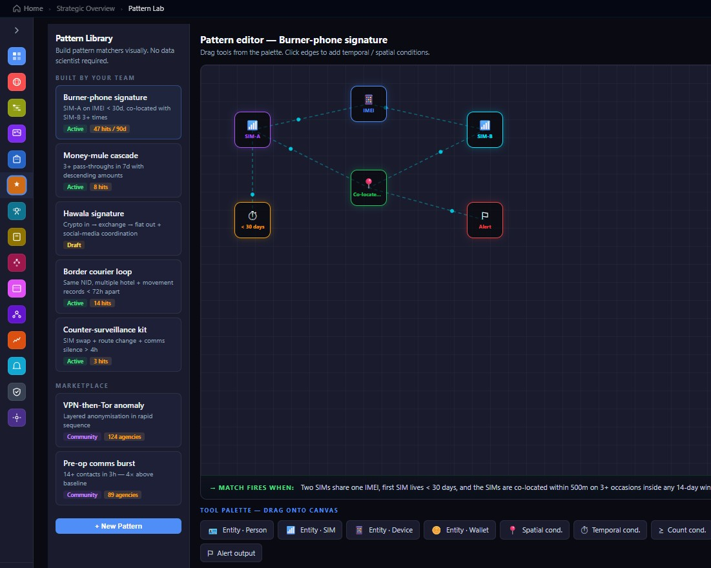
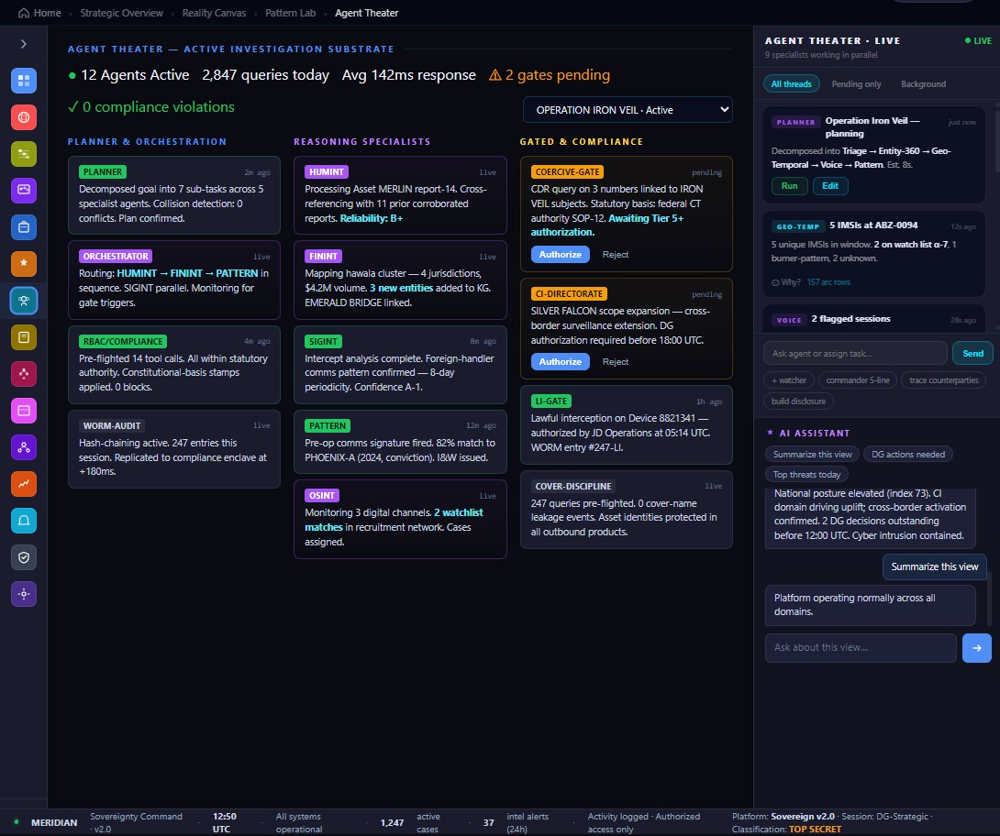
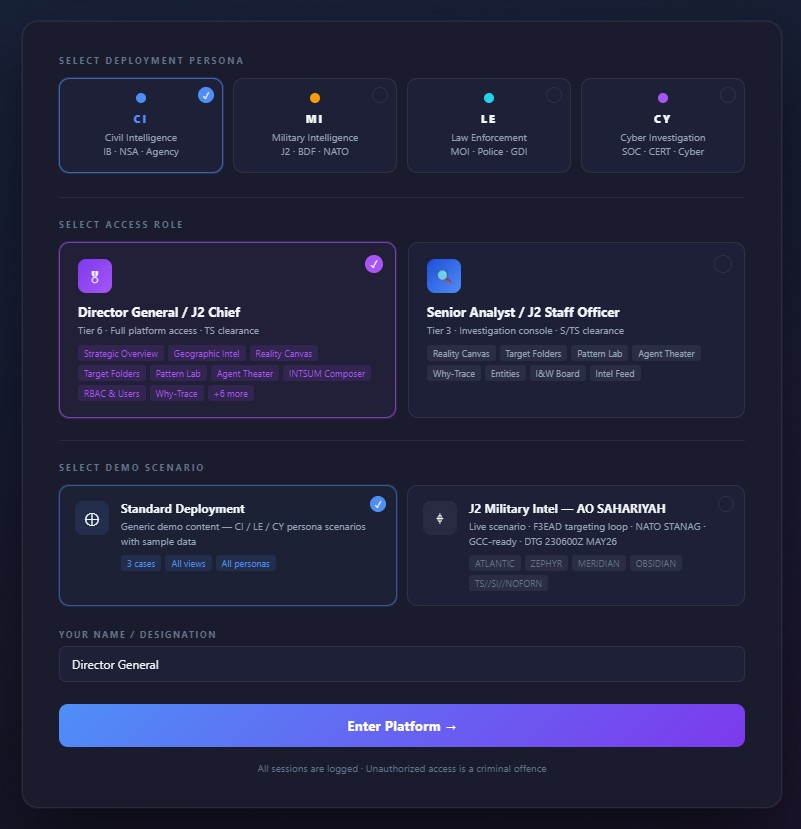

MERIDIAN
Sovereign intelligence platform for multi-agency deployments
Designed the complete interface system for MERIDIAN, a sovereign intelligence platform serving civil intelligence agencies, military J2 commands, law enforcement directorates, and cyber investigation units, all from a single deployment. The core challenge was making one product feel native to four operational cultures.
On this page: Overview • Discovery & Constraints • Opening • Brief • Design Thinking • Users • Journeys • Problems • IA • Screens • Design System • Impact & Outcomes
One platform, multiple institutional realities
Most enterprise platforms are built for one type of user, one workflow, and one organizational context. MERIDIAN needed to feel purpose-built for civil intelligence, military command, law enforcement, and cyber investigation without fragmenting into four separate products.
Formal generative research was not part of this fast-moving delivery. The team moved directly from program alignment into design, using existing operational context rather than fresh interview cycles.
Discovery relied on stakeholder alignment sessions, reviews of legacy system documentation, operator procedures, and assessments of current workflows. Expert consultation and internal mission context filled the gap left by a formal research phase.
We assumed the product needed a clear distinction between command, investigation, and compliance views. Those assumptions were tested through iterative sketches and stakeholder review rounds as the design matured.
The client required a single unified intelligence platform replacing a fragmented ecosystem of case management systems, geospatial tools, analyst workstations, and reporting applications. The platform had to preserve procedural and legal differences between deployments while enabling shared technical infrastructure.
User and organizational research established divergent workflows, legal constraints, and decision authorities across four personas — this framed persona-driven IA and feature priorities.
Affinity mapping and task analysis surfaced shared patterns and unique needs, guiding which modules would be persona-conditional versus universally available.
Sketches and low-fi flows explored persona-first navigation, login persona selector concepts, and the Reality Canvas mental model for persistent investigation.
Interactive prototypes validated map-first interactions, Agent Theater layouts, and Why-Trace layered disclosure for AI explainability.
Iterative usability tests refined persona flows, clarified compliance visibility, and tuned density for long analytic sessions.
Component handoffs and detailed interaction specs supported engineering implementation of persona-conditional rendering and complex canvas interactions.
Requires synthesized national situational awareness, decision queue visibility, and concise authorization flow. Needs answers in under a few minutes without digging into operational detail.
Manages users, approvals, and audit logs. Needs governance tools that prioritize operational hygiene and prevent compliance gaps.
Core power user who builds cases, runs AI agents, constructs patterns, and authors briefs. Needs a persistent investigative workspace that supports long sessions.
Handles assigned cases, validates matches, and escalates findings. Requires clear clearance boundaries and inline compliance visibility.
Navigation, terminology, and permissions must adapt per persona without fragmenting the product.
Every AI claim must surface a traceable reasoning chain with source citations and compliance context.
Analysts need multi-session continuity: live agents, persistent context, and non-destructive exploration tools.
Legal and clearance indicators must be visible at the point of action, not appended as modal checks.
Visual pattern tools must translate to plain language and run at scale without requiring data science skills.
Persona-driven views make each role feel purpose-built while sharing underlying infrastructure.
AI outputs are transparent and require human gating for high-impact decisions.
Inline legal signals and clearance badges reduce accidental authorization errors.
Persistent canvases, low visual-noise design, and session continuity support long investigations.
These screens are the operational expression of the IA hierarchy above. They show how the four core zones — Command, Investigate, Operate, and Manage — translate into the product workflows users rely on.
Key screens that define MERIDIAN

Strategic Overview
Provides a synthesized national situational awareness view for senior leaders. The DG uses this screen to review the National Threat Index, authorization queue, and high‑priority operational briefs — enabling decisions in under four minutes without leaving the overview.

Reality Canvas
The persistent investigative workspace where analysts build cases across Map, Graph, Timeline, Voice, and Crypto lenses. Context persists across sessions while live AI agents surface relevant matches.

Pattern Lab
A visual, node-and-edge pattern builder that lets domain experts compose complex temporal and spatial detection rules without code. Matches translate to plain language and update live as the pattern is tuned.

Agent Theater
Orchestrates specialized agents in parallel and exposes each agent's activity, outputs, and compliance posture. The three-column layout (Planner, Reasoning, Gated) makes autonomous vs. human‑gated activity visually explicit.
Component System & Tokens
Dark base, persona accent tokens, clearance typographic treatments, confidence bars, and rating badges form the visual language across modules.
We chose explicit persona selection at login to avoid ambiguous context inference — improves safety and reduces accidental cross-persona actions.
Implicit role inference risks showing a DG the wrong workspace or exposing IO-level data to admin-only actions. An explicit persona gate makes the security boundary visible at the right moment.

Persona matrices, IA specs, interaction flows, component library, prototype links, and test scripts were delivered alongside design tokens.
Component handoffs included interaction specs for Pattern Lab, Why-Trace, and Reality Canvas to ensure consistent behavior across implementations.
Unified platform delivery
Enabled a single intelligence interface system to support multiple operational cultures without splitting the product.
Design system handoff
Delivered a cohesive interface architecture and component foundation for the engineering team.
Reduced training friction
Consistent patterns and terminology helped preserve shared operational mental models.
Faster investigations
Persistent canvases and live agents shortened time-to-insight across common case workflows.
Stakeholder-aligned delivery
Design decisions were validated through direct client and operational feedback rather than separate generative research.